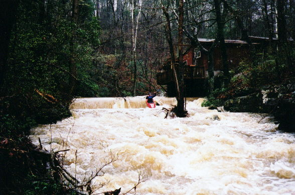

| The downstream end of the put-in culvert. You can perhaps judge water level by the rock under Shane's paddle blade. This was a good level. | |
|  | Greg Lawrence on the first dam drop |
| Shane Hulsey towards the bottom of the big slide. From the top, you can only see the bottom of the slide. Very cool. Don't get stuffed under the rock on river right. | |
|
Bert Harris in a typical stretch between the slide and the falls. |
 |
Greg looks on as Bert completes his rodeo moves at a sticky hole upstream of the diagonal log |
| Greg runs the slide above the falls. We are in the last eddy, and I ferried across to scout. Greg realized this was the last eddy a bit too late. |
| Shane on line at the falls. | |
| Mark D' with R-rated results. I
was back paddling just above the drop, trying to hit the line to my left.
"What am I doing?" I thought to myself. Perhaps my worst looking
falls run ever, but I did stay upright. They made me post this, it
really belongs in the carnage pages.
By this time, it was raining so hard that the light was low, and the camera wanted a flash. So the pictures are a bit fuzzy. |
| Gerg runs left to avoid the undercut wall below the falls. | |
| Shane on the last drop into the Locust. If you paddle by Big Scirum and you see this much water, hit it. |